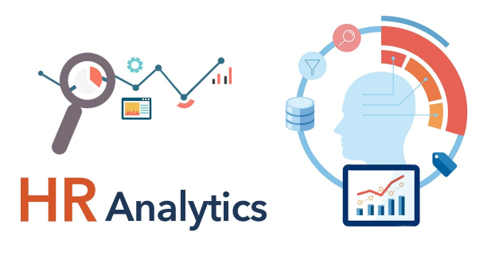
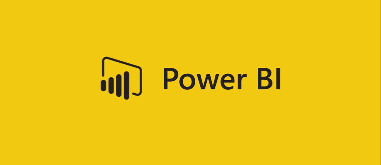

This is a
Portfolio
My Portfolio showcases a range of projects that demonstrate my expertise in Python Programming, SQL, Tableau, Microsoft Power BI and Microsoft Excel.
Throughout my portfolio, you'll find examples of how I've used these diverse skills to tackle a wide range of data-driven challenges. I'm passionate about leveraging the latest technologies to uncover valuable insights and help organizations make more informed decisions.
Please feel free to explore my portfolio and don't hesitate to reach out if you have any questions or would like to discuss potential collaboration opportunities.

Created an SQL query and Power BI dashboards to analyze and visualize bank loan data for enhanced financial insights.

Developed interactive visualizations and dashboards using Power Bi to enable data-driven decision making around HR strategies and workforce management.

In this project we scrape top 200 Companies data from Market Cap using Beautiful Soup, Requests and Pandas.
In this project we scrape top 50 Anime Series of all time data from IMDB using Beautiful Soup, Requests and Pandas.
In this project we scrape UEFA Champions League data from Wikipedia using Beautiful Soup, Requests and Pandas.
In this project we take data and transform it in SQL Server to make it more usable for analysis.

In this Project we use Pandas library to filter and clean data, Then we use Matplotlib to create visualizations.

Here are some visualizations using Tableau Dashboards.
In this project we use Tkinter library from Python to make a game.
In this project we use Python to make a game.

Here are some visualizations using Power BI Dashboards.
.png)
In this profect we use HTML and CSS to make a form.

In this project we use Python to make a Coffee Machine.